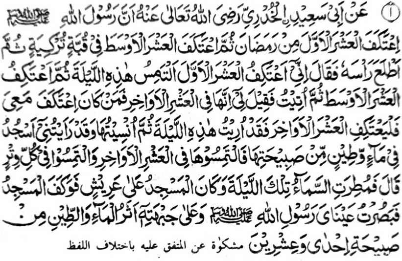

Miyakathitayan ko Abu Sa’eed Al-Khudri (Radhiallaho ‘Anho) a mata-an a so Rasulollah (Sallallaho ‘Alaihi wa Sallam) na miyag-I’tikaf ko paganay a sapolo gawi-i ko Ramadhan, oriyan niyan na miyag-I’tikaf ko lo-ok a sapolo gawi-i sa [Masjid] Qubbah Turkiyyah oriyan niyan na iniliyo niyan a olo niyan na miyatharo iyan:
“Mata-an a miyag-I’tikaf ako si-i ko paganay a sapolo gawi-i sa tontot sangka-iya a Kagagawi-i [a Lailatul Qadr] oriyan niyan na initaros aken ko miyakatondog a sapolo gawi-i na oriyan niyan na minitalingoma raken a katharo a mata-an a sekaniyan a si-i matatago ko mori a sapolo gawi-i na sa tao a kabaya iyan a phangeped raken sa I’tikaf na pag-I’tikaf sekaniyan sangka-iya a manga mori a gawi-i ka mata-an a piyaki-ilay raken angka-iya a Kagagawi-i [a Lailatul Qadr] oriyan niyan na piyakilipatan raken.
Sabenar a miya-ilay aken a ginawa ko a somosodod [ko Allah (Subhanaho wa Ta’ala)] si-i ko latay ko kiyapita iyan a makatotondog sangkoto a Kagagawi-i. Giyoto-i sabap a pimbanog aken sekaniyan [a Kagagawi-i] ko mori a sapolo gawi-i, sa mbanoga niyo sekaniyan ko manga gansar a kagagawi-i.”
Pitharo iyan [a Abu Sa’eed]: “Na miyoran sangkoto a kagagawi-i na litosan so atep o Masjid na miya-ilay den o mata ko so Rasulollah (Sallallaho ‘Alaihi wa Sallam) a so somosodod ko latay ko kakhapita iyan ko ika dowa polo ago isa a kagagawi-i.”
Kalalayaman a ola-ola o Rasulollah (Sallallaho ‘Alaihi wa Sallam) so I’tikaf ko soled o Ramadhan. Pekhasalak pen a tatap sekaniyan sa Masjid ko tenday angkoto a olan-olan, go si-i ko mori a ragon a kaoyag-oyag iyan, na zisi-i sekaniyan sa I’tikaf ko soled o dowa polo gawi-i. Sabap ko tonganay niyan a kapezibay sa Masjid ko mori a sapolo gawi-i ko Ramadhan, na inibetad o manga Ulama sa Sunnah Muakkadah so kapag-I’tikaf sangkoto a masa.
Siyabot sangkanan a miya-aloy a Hadith a aya mala a hadap ko gi-i kapag-I’tikaf na so gi-i kambabanoga ko Lailatul Qadr. Antona-a pen-i makalawan a mapiya ola-ola ko masa a gi-i ron kambabanoga a ba niyan kalawani so katatap o tao ko Ibaadah ko tenday angkoto a masa, sa igira a I’tikaf na [so tao na tatap ko simba] melagid o me’enao o di na totorogen.
Salakao ro-o pen, na si-i sa I’tikaf na matatabiya so tao ko kalalayaman a manga galebek ko oman gawi-i na khapakay a so langon o oras iyan na misenggay niyan ko Dhikrullah (so taden-tadem ko Allah (Subhanaho wa Ta’ala)) ago si-i ko kapamimikiran sa madalem.
Si-i ko tenday o Ramadhan na so Rasulollah (Sallallaho ‘Alaihi wa Sallam) na tatap ko Ibaadah balabao ron igira miyatalingoma so mori a sapolo gawi-i, ka da niyan den tago-i sa takes so gi-i niyan kapelogat. Gi-i sekaniyan thoday ko mababasa gawi-i go biyaloy niyan a ginawa niyan a ladiyawan sa kapephamokawa niyan ko manga ta-alok rekaniyan pantag bo ko lagid oto a antap.
So A’isha (Radhiallaho ‘Anha) na pitharo iyan: “Igira mori a sapolo gawi-i ko Ramadhan, na so Rasulollah (Sallallaho ‘Alaihi wa Sallam) na phagilotan niyan so igotan o so saro-ar iyan, sa gi-i thoday ko mababasa gawi-i go pephamokaon niyan so manga ta-alok rekaniyan [pantag bo ko kanggalebek sa Ibaadah].”
So “kaphagiloti niyan ko saro-ar iyan” na khapakay a makapema-ana: